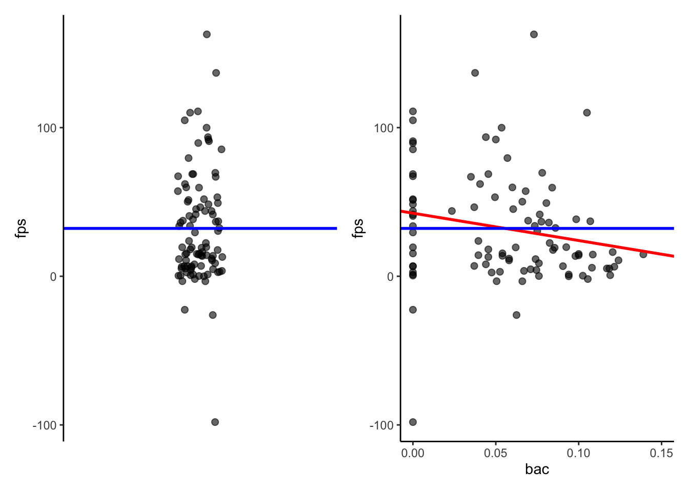
4 Inferences About a Single Quantitative Predictor
4.1 Two Parameter (One Predictor) Models
We started with a very simple model of FPS: \(\hat{\text{FPS}}= \beta_0\)
What if some participants were drunk and we knew their blood alcohol concentrations (BAC)?
4.1.1 Question: Would it help? What would the model look like? What question(s) does this model allow us to test?
DATA = MODEL + ERROR
\(Y_i= \beta_0+\beta_1*X_1+\varepsilon_i\)
\(\hat{Y}_i=\beta_0+\beta_1*X_1\)
\(\varepsilon_i = Y_i - \hat{Y}_i\)
\(\hat{\text{FPS}}_i=\beta_0+\beta_1*\text{BAC}_1\)
4.2 The Two Parameter Model
\(\hat{Y}_i=\beta_0+\beta_1*X_1\)
As before, the population parameters in the model (\(\beta_0, \beta_1\)) are estimated by \(b_0\) & \(b_1\) calculated from sample data based on the least squares criterion such that they minimize SSE in the sample data.
Sample model:
\(\hat{Y}_i=b_0+b_1*X_1\)
To derive these parameter estimates you must solve a series of simultaneous equations using linear algebra and matrices (see supplemental reading).
Or use R!
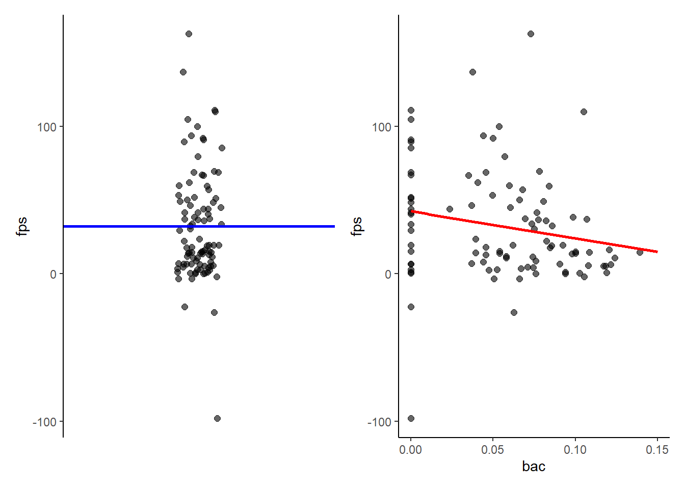
4.3 Least Squares Criterion
\(e_i = Y_i- \hat{Y}_i\)
\(\text{SSE} = \sum e_i^2\)
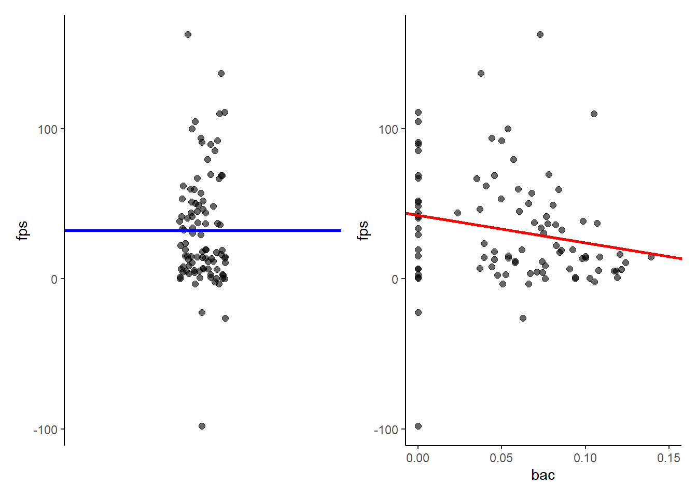
4.4 Interpretation of \(b_0\) in Two Parameter Model
\(\hat{Y}_i=b_0+b_1*X_1\)
\(b_0\) is predicted value for \(Y\) when \(X_1\) = 0. Graphically, this is the \(Y\) intercept for the regression line (value of \(Y\) where regression line crosses Y-axis at \(X_1\) = 0).
4.4.1 Question: Approximately what is \(b_0\) in this example?
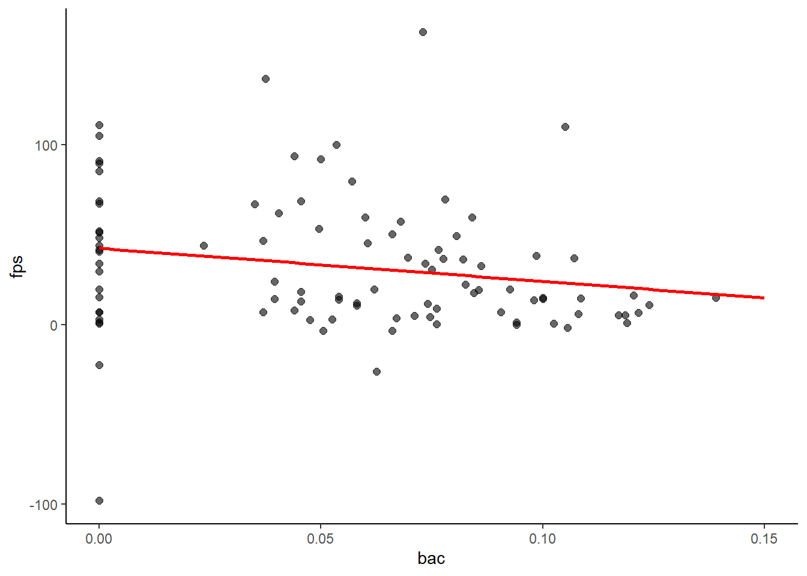
42.5
IMPORTANT: Notice that \(b_0\) is very different in the two parameter model (42.5) than in the previous one parameter model (32.2).
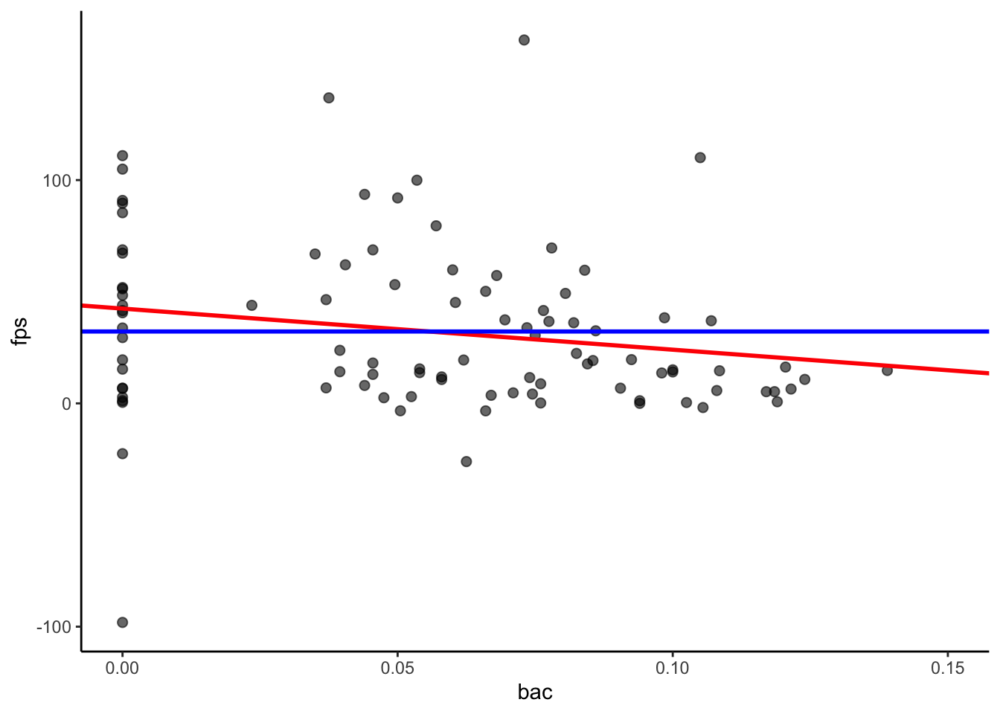
4.4.2 Question: Why?
In the one parameter model \(b_0\) was our sample estimate of the mean FPS score in everyone. \(b_0\) in the two parameter model is our sample estimate of the mean FPS score for people with BAC = 0, not everyone.
4.5 Interpretation of \(b_1\) in Two Parameter Model
\(\hat{Y}_i=b_0+b_1*X_1\)
\(b_1\) is the predicted change in \(Y\) for every one unit change in \(X_1\). Graphically it is represented by the slope of the regression line. If you understand the units of your predictor and DV, this is an attractive description of their relationship.
\(\hat{\text{FPS}}_i=42.5+ -184.1*\text{BAC}_i\)
For every 1% increase in BAC, FPS decreases by 184.1 microvolts.
For every .01% increase in BAC, FPS decreases by 1.841 microvolts.
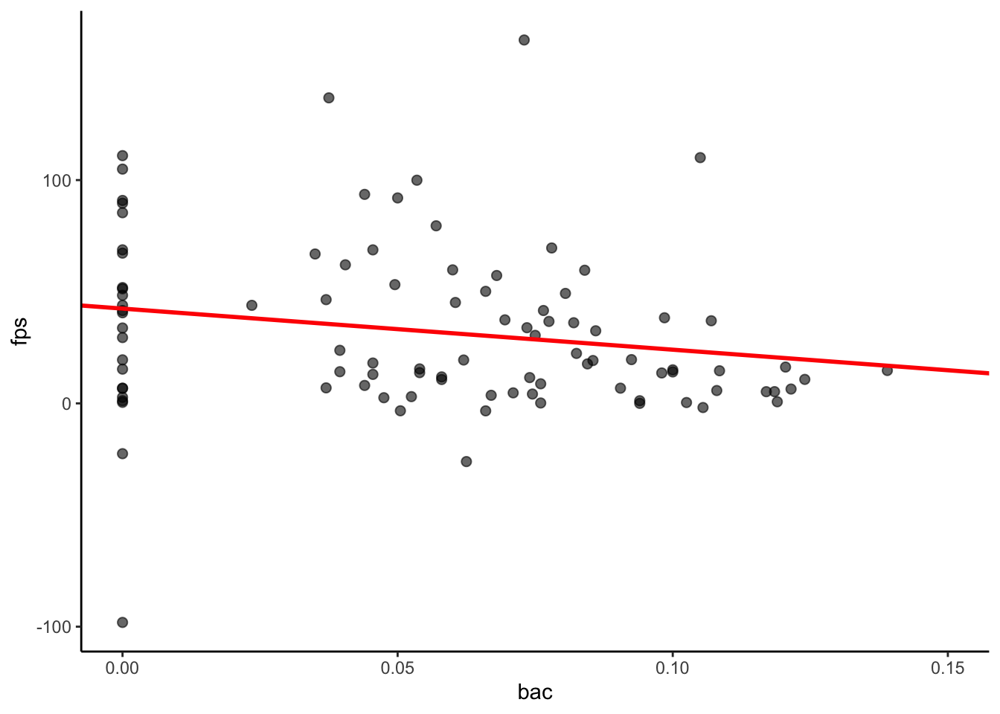
4.6 Testing Inferences about \(\beta_1\)
Does alcohol affect people’s anxiety?
\(\hat{\text{FPS}}_i=\beta_0+\beta_1*\text{BAC}_i\)
4.6.1 Question: What are your null and alternative hypotheses about a model parameter to evaluate this question?
\(H_0: \beta_1=0\)
\(H_a: \beta_1 \neq 0\)
If \(\beta_1 = 0\), this means that FPS does not change with changes in BAC. In other words, there is no effect of BAC on FPS. If \(\beta_1 < 0\), this means that FPS decreases with increasing BAC (people are less anxious when drunk). If \(\beta_1 > 0\), this means FPS increases with increasing BAC (people are more anxious when drunk).
4.7 Estimating a Two Parameter Model in R
library(tidyverse)
library(patchwork)
theme_set(theme_classic())
path_data <- "data_lecture"
data <- read_csv(here::here(path_data, "4_single_quantitative_bac_fps.csv"),
show_col_types = FALSE)data |>
skimr::skim()| Name | data |
| Number of rows | 96 |
| Number of columns | 3 |
| _______________________ | |
| Column type frequency: | |
| character | 1 |
| numeric | 2 |
| ________________________ | |
| Group variables | None |
Variable type: character
| skim_variable | n_missing | complete_rate | min | max | empty | n_unique | whitespace |
|---|---|---|---|---|---|---|---|
| subid | 0 | 1 | 4 | 4 | 0 | 96 | 0 |
Variable type: numeric
| skim_variable | n_missing | complete_rate | mean | sd | p0 | p25 | p50 | p75 | p100 | hist |
|---|---|---|---|---|---|---|---|---|---|---|
| bac | 0 | 1 | 0.06 | 0.04 | 0.0 | 0.02 | 0.06 | 0.08 | 0.14 | ▇▆▇▆▂ |
| fps | 0 | 1 | 32.19 | 37.54 | -98.1 | 6.79 | 19.46 | 50.46 | 162.74 | ▁▃▇▂▁ |
m_2 <- lm(fps ~ bac, data = data)
m_2 |>
broom::tidy()# A tibble: 2 × 5
term estimate std.error statistic p.value
<chr> <dbl> <dbl> <dbl> <dbl>
1 (Intercept) 42.5 6.55 6.48 0.00000000411
2 bac -184. 95.9 -1.92 0.0579
4.7.1 Question: Does BAC affect FPS? Explain this conclusion in terms of the parameter estimate, \(b_1\) and its standard error.
Under the \(H_0: \beta_1 = 0\), the sampling distribution for \(\beta_1\) will have a mean of 0 with an estimated standard deviation 95.89.
\(t (96 - 1) = \frac{-184.09 - 0}{95.89 } = -1.92\)
Our value of the parameter estimate, \(b_1\), is 1.92 standard deviations below the expected mean of the sampling distribution for \(H_0\).
pt(-1.92, 94, lower.tail = TRUE)*2[1] 0.05788984A \(b_1\) of this size is not unlikely under the null, therefore you fail to reject the null and conclude that BAC has no effect on FPS.
4.8 Testing Inferences about \(\beta_1\)
m_2 |>
broom::tidy()# A tibble: 2 × 5
term estimate std.error statistic p.value
<chr> <dbl> <dbl> <dbl> <dbl>
1 (Intercept) 42.5 6.55 6.48 0.00000000411
2 bac -184. 95.9 -1.92 0.0579 One tailed p-value:
pt(-1.92, 94, lower.tail = TRUE)[1] 0.02894492\(H_0: \beta_1 = 0\)
\(H_1: \beta_1 < 0\)
Two tailed p-value:
pt(-1.92, 94, lower.tail = TRUE)*2[1] 0.05788984\(H_0: \beta_1 = 0\)
\(H_1: \beta_1 \neq 0\)
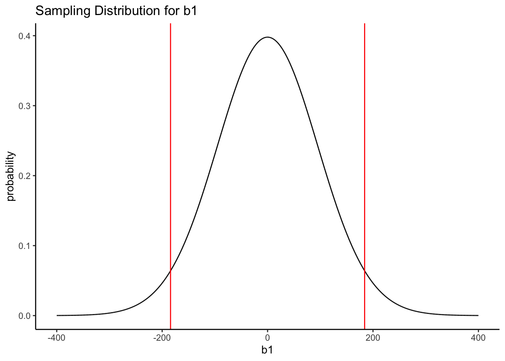
4.9 Model Comparison: Testing Inferences about \(\beta_1\)
\(H_0: \beta_1 = 0\)
\(H_1: \beta_1 \neq 0\)
4.9.1 Question: What two models are you comparing when you test hypotheses about \(\beta_1\)? Describe the logic.
Compact model: \(\hat{\text{FPS}}_i = \beta_0+0*\text{BAC}_i\)
\(P_c=1\)
\(\text{SSE}_c=133888.3\)
Augmented model: \(\hat{\text{FPS}}_i = \beta_0+\beta_1*\text{BAC}_i\)
\(P_a=2\)
\(\text{SSE}_a=128837.1\)
\(F(P_a-P_c, N-P_a) = \frac{\text{SSE}_c-\text{SSE}_a/(P_a-P_c)}{\text{SSE}_a/(N-P_a)}\)
F(1,94) = 3.685, p = 0.058
m_1 <- lm(fps ~ 1, data = data)
m_2 <- lm(fps ~ bac, data = data) anova(m_1, m_2)Analysis of Variance Table
Model 1: fps ~ 1
Model 2: fps ~ bac
Res.Df RSS Df Sum of Sq F Pr(>F)
1 95 133888
2 94 128837 1 5051.2 3.6854 0.05792 .
---
Signif. codes: 0 '***' 0.001 '**' 0.01 '*' 0.05 '.' 0.1 ' ' 14.10 Sum of Squared Errors
4.10.1 Question: If there is a perfect relationship between \(X_1\) and \(Y\) in your sample, what will the SSE be in the two parameter model (augmented) and why?
\(\text{SSE}_a=0\). All data points will fall perfectly on the regression line. All errors will be 0.
4.10.2 Question: If there is no relationship at all between \(X_1\) and \(Y\) in your sample (\(b_1\) = 0), what will the SSE be in the two parameter model (augmented) and why?
\(\text{SSE}_a=\text{SSE}\) of the mean-only model. \(X_1\) provides no additional information about the DV. Your best prediction will still be the mean of the DV.
4.11 Testing Inferences about \(\beta_0\)
m_2 |>
broom::tidy()# A tibble: 2 × 5
term estimate std.error statistic p.value
<chr> <dbl> <dbl> <dbl> <dbl>
1 (Intercept) 42.5 6.55 6.48 0.00000000411
2 bac -184. 95.9 -1.92 0.0579
4.11.1 Question: What is the interpretation of \(b_0\) in this two parameter model?
It is the predicted FPS for a person with BAC = 0 (sober).
The test of this parameter estimate could inform us if the shock procedure worked among our sober participants. This is probably a more appropriate manipulation check than testing if it worked in everyone including drunk people given that alcohol could have reduced FPS.
4.11.2 Question: What two models are being compared?
Compact model: \(\hat{\text{FPS}}_i= 0 + \beta_1* \text{BAC}_i\)
Augmented model: \(\hat{\text{FPS}}_i= \beta_0 + \beta_1* \text{BAC}_i\)
4.12 Mean Centering Predictor Variables
In this example, I have been using raw BAC. In many instances, we will mean center our quantitative predictor variables.
Mean centering simply involves subtracting the mean of the predictor variable from all scores for that predictor variable.
data <- data |>
1 mutate(bac_c = bac - mean(bac))- 1
-
We use
mutate()to update and create new variables (e.g., centered quantitative predictors, changing character variables to factors).
data |>
select(starts_with("bac")) |>
1 pivot_longer(everything(), names_to = "var") |>
group_by(var) |>
summarize(mean = mean(value),
sd = sd(value),
min = min(value),
max = max(value)) |>
2 mutate(across(mean:max, ~round(.x, 2)))- 1
-
pivot_longer()andpivot_wider()are two tidy functions for transforming your data frame (i.e., wide to long data frame and long to wide data frame).
- 2
-
Here we use
mutate()again, but are now combing it withacross()so that we can apply our transformation (rounding to 2 decimal places) to several variables in one statement.
# A tibble: 2 × 5
var mean sd min max
<chr> <dbl> <dbl> <dbl> <dbl>
1 bac 0.06 0.04 0 0.14
2 bac_c 0 0.04 -0.06 0.084.12.1 Question: How would the parameter estimate values and interpretations change if I mean centered BAC?
m_2 |>
broom::tidy()# A tibble: 2 × 5
term estimate std.error statistic p.value
<chr> <dbl> <dbl> <dbl> <dbl>
1 (Intercept) 42.5 6.55 6.48 0.00000000411
2 bac -184. 95.9 -1.92 0.0579 m_2_c <- lm(fps ~ bac_c, data = data)
m_2_c |>
broom::tidy()# A tibble: 2 × 5
term estimate std.error statistic p.value
<chr> <dbl> <dbl> <dbl> <dbl>
1 (Intercept) 32.2 3.78 8.52 2.57e-13
2 bac_c -184. 95.9 -1.92 5.79e- 2The value and interpretation of \(b_0\) will change because it is the predicted FPS score at 0 on \(X\). \(b_0\) is now the predicted value for someone with the mean BAC in the sample.
No change to interpretation of \(b_1\). Why? Think about it…
4.13 Raw vs. Centered BAC
4.13.1 Question: How would the graph look different? Where is \(b_0\) and \(b_1\) on the new figure? Would you center BAC in this example?
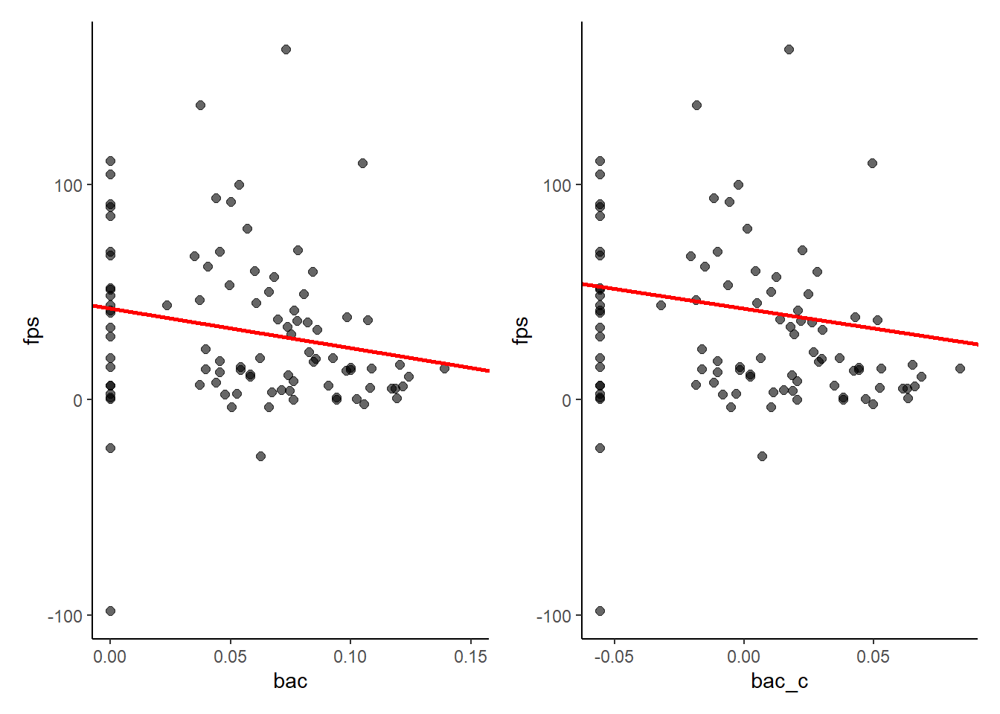
4.14 Confidence Interval for \(b_j\) or \(b_0\)
You can provide confidence intervals for each parameter estimate in your model.
confint(m_2) 2.5 % 97.5 %
(Intercept) 29.45597 55.457721
bac -374.49261 6.308724The underlying logic from your understanding of sampling distributions remains the same.
\(CI_b = b\pm t(\alpha; N-P)*SE_b\) where \(P\) = total # of parameters.
4.14.1 Question: How can we tell if a parameter is significant from the confidence interval?
If a parameter \(\neq 0\), at \(\alpha\) = .05, then the 95% confidence interval should not include 0. True for any other non-zero value for \(b\) as well.
4.15 Partial Eta Squared (\(\eta_p^2\)) or PRE for \(\beta_1\)
4.15.1 Question: How can you calculate the effect size estimate \(\eta_p^2\) (PRE) for \(\beta_1\)?
Compare the SSE across the two relevant models.
Compact model: \(\hat{\text{FPS}}_i= \beta_0 + 0* \text{BAC}_i\)
\(\text{SSE}_c = 133888.3\)
Augmented model: \(\hat{\text{FPS}}_i= \beta_0 + \beta_1* \text{BAC}_i\)
\(\text{SSE}_a = 128837.1\)
\(\frac{\text{SSE}_c - \text{SSE}_a}{\text{SSE}_c}=\frac{133888.3- 128837.1}{133888.3}= 0.038\)
(sum(residuals(m_1)^2)- sum(residuals(m_2)^2))/sum(residuals(m_1)^2) [1] 0.03772707Our augmented model that includes a non-zero effect for BAC reduces prediction error (SSE) by only 3.8% over the compact model that fixes this parameter at 0.
4.15.2 Question: How can you calculate the effect size estimate \(\eta_p^2\) (PRE) for \(\beta_0\)?
Compare the SSE across the two relevant models.
1m_2_0 <- lm(fps ~ bac - 1, data = data)- 1
- We can use -1 to remove the intercept (i.e., set it equal to 0) from our new compact model.
Compact model: \(\hat{\text{FPS}}_i= 0 + \beta_1* \text{BAC}_i\)
\(\text{SSE}_c = 186462.4\)
Augmented model: \(\hat{\text{FPS}}_i= \beta_0 + \beta_1* \text{BAC}_i\)
\(\text{SSE}_a = 128837.1\)
\(\frac{\text{SSE}_c - \text{SSE}_a}{\text{SSE}_c}=\frac{186462.4- 128837.1}{186462.4}= 0.309\)
(sum(residuals(m_2_0)^2)- sum(residuals(m_2)^2))/sum(residuals(m_2_0)^2) [1] 0.3090451Our augmented model that allows FPS to be non-zero for people with BAC=0 (sober people) reduces prediction error (SSE) by 30.9% from the model that fixes FPS at 0 when BAC=0!
4.16 Coefficient of Determination (\(R^2\))
Coefficient of Determination (\(R^2\)):
Proportion of explained variance (i.e., proportion of variance in \(Y\) accounted for by all \(Xs\) in model).
DATA = MODEL + ERROR
For individuals:
\(Y_i=Y_i+e_i\)
With respect to variance:
\(S_{Y_i}^2=S_{\hat{Y}_i}^2+S_{e_i}^2\)
\(R^2=\frac{S_{\hat{Y}_i}^2}{S_{Y_i}^2}\)
var(predict(m_2))/ var(data$fps)[1] 0.037727074.17 \(R^2\) and the Mean-Only Model
4.17.1 Question: Why did the mean-only model not have an \(R^2\)?
It did but it was just 0. It explained no variance in \(Y_i\) because it predicted the same value (mean) for every person. The variance of the predicted values is 0 in the mean-only model.
\(R^2=\frac{S_{\hat{Y}_i}^2}{S_{Y_i}^2}\)
In fact, the SSE for the mean-only model is the numerator of the formula for the variance for \(Y_i\).
\(\text{SSE}=\frac{\sum(Y_i-\hat{Y_i})^2}{}\)
\(S^2 = \frac{\sum(Y_i-\overline{Y})^2}{N-1}\)
This leads to an alternative formula for \(R^2\) for an augmented model.
\(R^2=\frac{\text{SSE}_\text{mean-only}-\text{SSE}_a}{\text{SSE}_\text{mean-only}}\)
Mean-only model: \(\hat{\text{FPS}}_i=\beta_0\)
\(\text{SSE}_{\text{mean-only}} = 133888.3\)
Augmented model: \(\hat{\text{FPS}}_i=\beta_0 + \beta_1*\text{BAC}_i\)
\(\text{SSE}_a = 128837.1\)
\(R^2= \frac{133888.3 - 128837.1}{133888.3} = 0.03773\)
In this augmented model, \(R^2\) is fully accounted for by BAC. In more complex models, \(R^2\) will be the aggregate of multiple predictors. \(R^2\) is only defined for models that include \(b_0\).
4.18 Test of \(\beta_1\) in Two Parameter Model: Special Case
4.18.1 Question: When both the predictor variable and the dependent variable are quantitative, the test of \(\beta_1\) = 0 is statistically equivalent to the what other common statistical test?
The test of the Pearson’s correlation coefficient, r.
psych::corr.test(data$bac, data$fps)Call:psych::corr.test(x = data$bac, y = data$fps)
Correlation matrix
[1] -0.19
Sample Size
[1] 96
These are the unadjusted probability values.
The probability values adjusted for multiple tests are in the p.adj object.
[1] 0.06
To see confidence intervals of the correlations, print with the short=FALSE optionFurthermore, \(r^2=R^2\) for this model only.
\(-0.194^2 = 0.038\)
4.19 Visualizing the Model
The effect() function in the effects package can be used to quickly fit model values and calculate 95% confidence intervals for plotting the model.
(e <- effects::effect('bac', m_2) |>
as_tibble())# A tibble: 5 × 5
bac fit se lower upper
<dbl> <dbl> <dbl> <dbl> <dbl>
1 0 42.5 6.55 29.5 55.5
2 0.035 36.0 4.27 27.5 44.5
3 0.07 29.6 4.02 21.6 37.5
4 0.1 24.0 5.68 12.8 35.3
5 0.14 16.7 8.92 -1.02 34.4ggplot(e, aes(x = bac, y = fit)) +
geom_line() +
geom_ribbon(aes(ymin = lower, ymax = upper), alpha = 0.2) +
labs(title = "Effect of BAC",
x = "BAC",
y = "FPS") 4.20 Error Band for \(\hat{Y}_i\)
You are predicting the mean \(Y\) for any \(X\). There is a sampling distribution around this mean. The true population mean \(Y\) for any \(X\) is uncertain. You can display this uncertainty by displaying information about the sampling distribution at any/every \(X\). This is equivalent to error bars in ANOVA.
The effect() function calculates 95% CI for \(\hat{Y}_i\). However, I prefer \(\pm\) 1 SE for publications.
\(\text{SEE} = \sqrt{\frac{\text{SSE}}{N-P}}\)
\(SE_\hat{Y_i}=\text{SEE}\sqrt{\frac{1}{N}+\frac{(X_i-\overline{X})^2}{(N-1)s_x^2}}\)
\(CI_\hat{Y_i}=\hat{Y_i}\pm t(\alpha; N-k-1)SE_\hat{Y_i}\)
4.20.1 Question: Why are the error bands not linear?
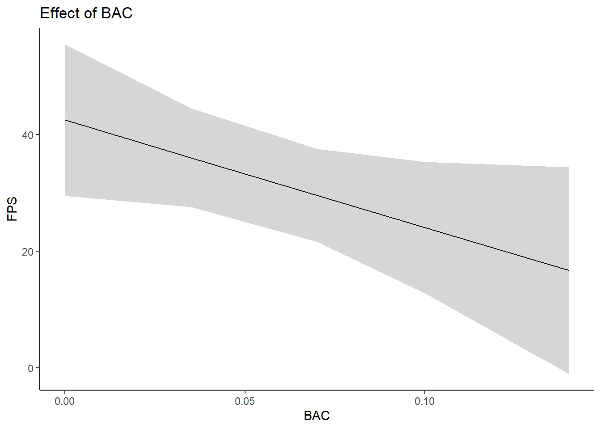
Model predictions are better (less error) near the center of your data (\(X_i\)). The regression line will always go through mean of \(X\) and \(Y\). Small changes in \(b_1\) across samples will produce bigger variation in \(\hat{Y}_i\) at the edge of the model (far from the mean \(X\)).
\(\hat{\text{FPS}_i}=42.5 + -184.1 * \text{BAC}_i\)
\(SE_\hat{Y_i}=\sqrt{\frac{\text{SSE}}{N-P}}*\sqrt{\frac{1}{N}+\frac{(X_i-\overline{X})^2}{(N-1)s_x^2}}\)
confint(m_2) 2.5 % 97.5 %
(Intercept) 29.45597 55.457721
bac -374.49261 6.3087244.20.2 Compare to the SE for \(b_0\).
\(SE_\hat{Y_i}=\sqrt{\frac{\text{SSE}}{N-P}}*\sqrt{\frac{1}{N}+\frac{(X_i-\overline{X})^2}{(N-1)s_x^2}}\)
\(SE_{b_0}=\sqrt{\frac{\text{SSE}}{N-P}}*\sqrt{\frac{1}{N}+\frac{(\overline{X})^2}{(N-1)s_x^2}}\)
\(b_0\) is simply the predicted value for \(Y\) when \(X\) = 0.
We can use additive transformations of \(X\) to make tests of the predicted value at \(X\) = 0. Most common in repeated measures designs but used elsewhere as well.
4.21 Publication Quality Figure
1preds <- predict(m_2, data, se.fit = TRUE) |>
as_tibble() |>
2 mutate(upper = fit + se.fit,
lower= fit - se.fit)
preds |>
ggplot() +
geom_point(aes(x = data$bac, y = data$fps), alpha = .6, size = 2) +
geom_line(aes(x = data$bac, y =fit),
color = "black", linewidth = 1) +
geom_ribbon(aes(x = data$bac, ymin = lower, ymax = upper), alpha = 0.2) +
labs(x = "Blood alcohol concentration",
y = "Fear-potentiated startle") - 1
-
We can use our model to generate predictions. We use the
se.fit = TRUEargument to return the standard error for each prediction. - 2
-
We use
mutate()to calculate \(\pm\) 1 standard error values for each prediction.
4.22 Review of Concepts
- \(b_0, b_1\)
- NHSTs
- Effect sizes
- CIs
- Conclusions
m_2 <- lm(fps ~ bac + 1, data = data)# A tibble: 2 × 5
term estimate std.error statistic p.value
<chr> <dbl> <dbl> <dbl> <dbl>
1 (Intercept) 42.5 6.55 6.48 0.00000000411
2 bac -184. 95.9 -1.92 0.0579 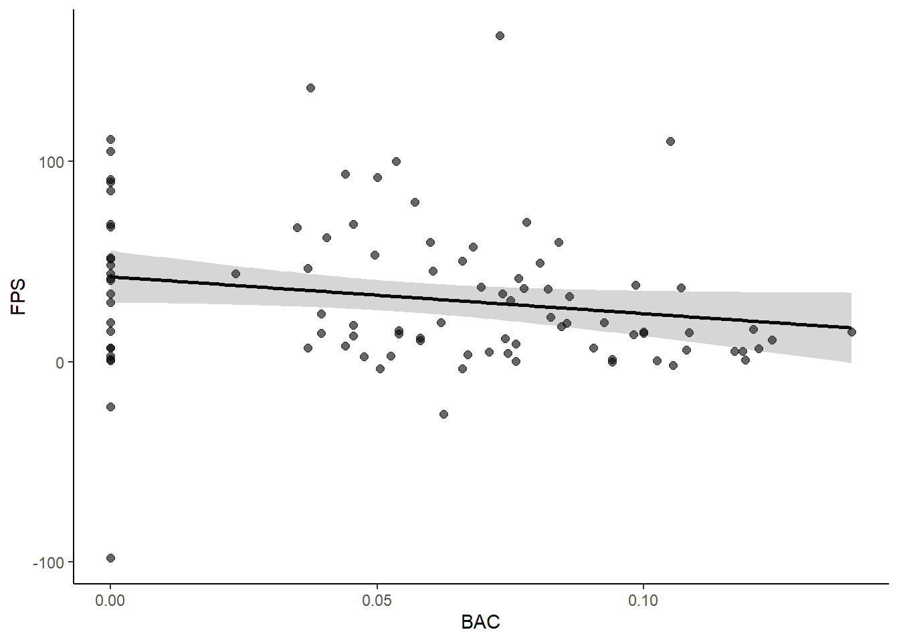
m_2_0 <- lm(fps ~ bac - 1, data = data)# A tibble: 1 × 5
term estimate std.error statistic p.value
<chr> <dbl> <dbl> <dbl> <dbl>
1 bac 324. 66.2 4.89 0.00000412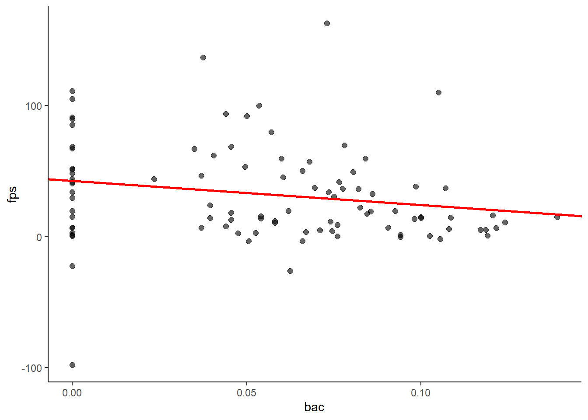
m_1 <- lm(fps ~ 1, data = data)# A tibble: 1 × 5
term estimate std.error statistic p.value
<chr> <dbl> <dbl> <dbl> <dbl>
1 (Intercept) 32.2 3.83 8.40 4.26e-13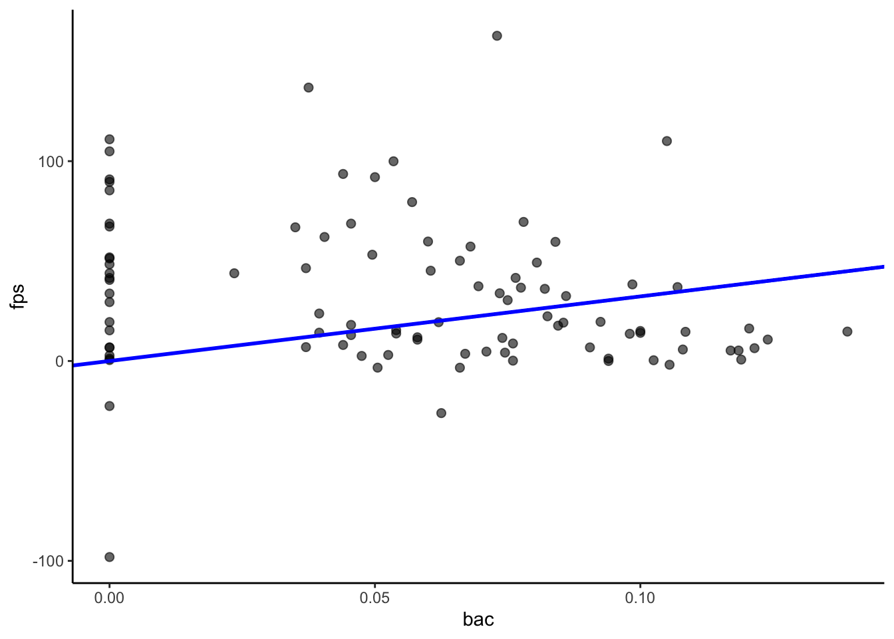